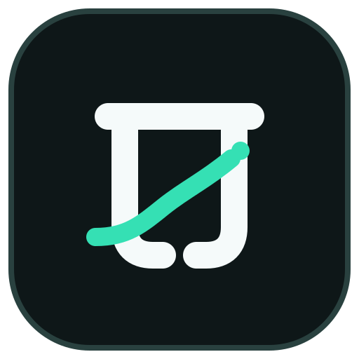
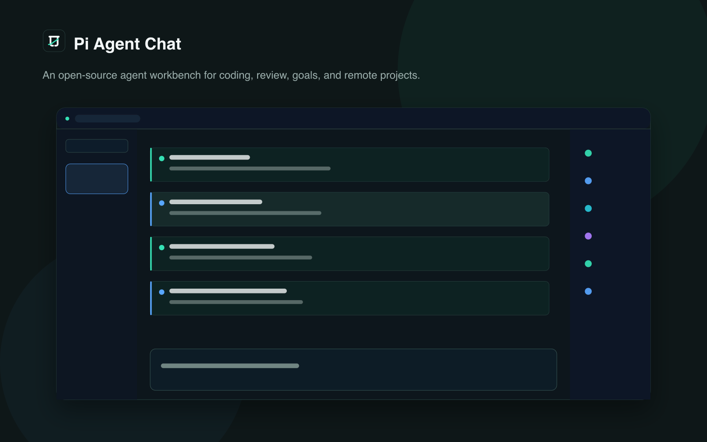

Create
创建一个干净的项目空间。
↘
Pi Agent Chat聊天只是入口。Pi Agent Chat 把目标、工具调用、审查、历史和项目控制放在同一个可以持续跟进的工作台里。
跟进每一条消息、工具活动与结果。
用目标、计划和权限把工作方向握在手里。
保留历史，支持继续、审查与回到上下文。
01 / THE WORKBENCH
当 Agent 开始工作，真正重要的是过程是否能被理解、被干预、被接续。Pi Agent Chat 把这些过程变成一条可以回看的工作线索。
把任务拆成可见的目标与进度，而不是让意图消失在长对话里。
从命令、文件到审查结果，沿着消息历史看清 Agent 做过什么。
桌面、Web 与远程项目都使用同一套可追踪的工作方式。

02 / A CLEARER FLOW
快速创建项目，直接设定目标，观察它完成，再回到上下文继续推进。每一步都有对应的 UI，而不是靠猜。
创建一个干净的项目空间。
↘把意图变成可以推进和验收的目标。
↘看清过程、结果与下一步。
✓03 / REAL UI
这不是合成的产品动画。视频来自真实的 5173 浏览器界面，展示从快速创建到 Goal 完成，再到状态面板和右侧 icon rail 的完整路径。
04 / MOBILE BY DESIGN
移动端不是被删减的备用入口。它保留目标、消息历史、状态面板和右侧 icon rail，让你在小屏幕上继续跟进 Agent 的工作。
面板入口按需展示，不因为移动端而被移除。
快速创建之后，Goal、计划和权限仍然有清晰的可见入口。
向上或向下加载消息时，工作现场不会变成一块空白。
05 / PRESS KIT
OPEN SOURCE / AGPL-3.0